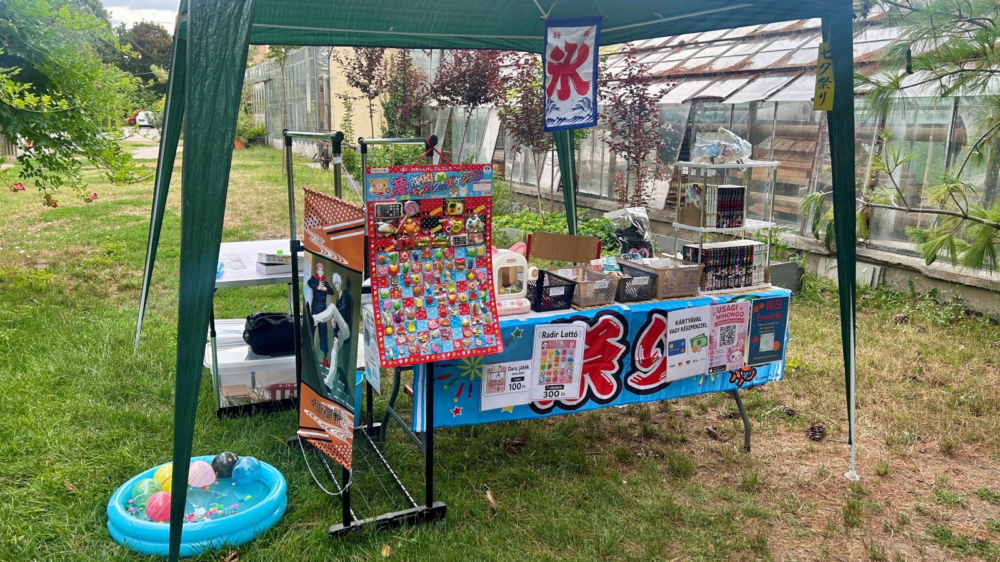
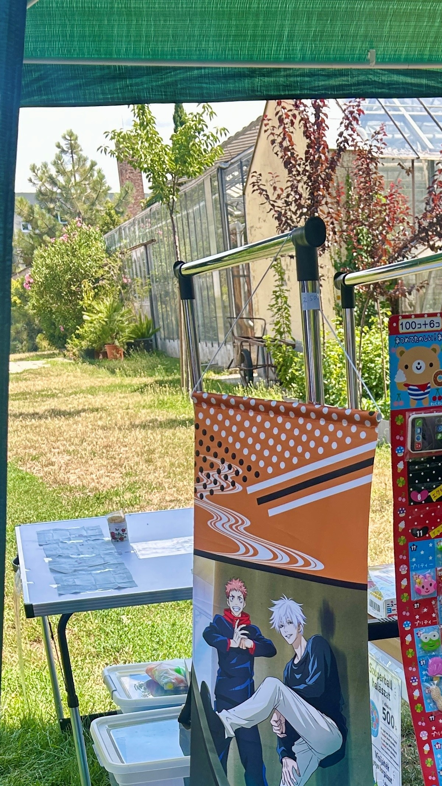
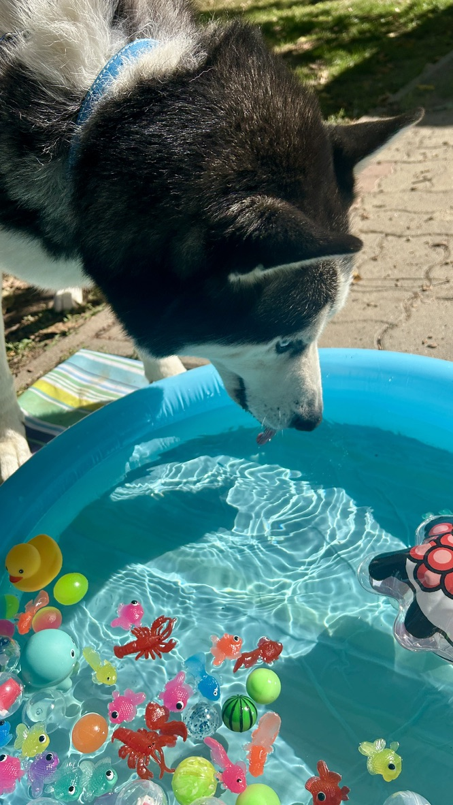

Üdvözlünk az Ennichi-n!
Az Ennichi nem csupán egy hely – ez egy igazi japán nyári fesztivál élménye Magyarországon!
Szeretnénk újraalkotni a japán hagyományos fesztiválok által hordozott, vidám, barátságos és kissé nosztalgikus hangulatot.
Gyere, játssz velünk Super Ball halászatot, próbáld ki a Radír Lottót, és vegyél részt édesség-nyereményhúzásainkon!
Ha pedig kedveled az animéket, nálunk megtalálod a legmenőbb anime hangulatú játékokat is.
Nálunk mindenki otthon érezheti magát — legyen szó kisgyermekről vagy felnőttről, lelkes rajongóról vagy kíváncsiskodóról.
Csatlakozz hozzánk, és éld át velünk a japán nyár varázsát! 🌸
Galéria




